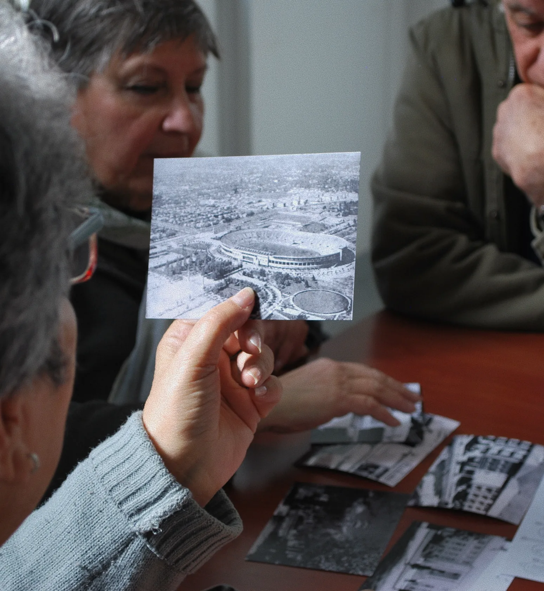
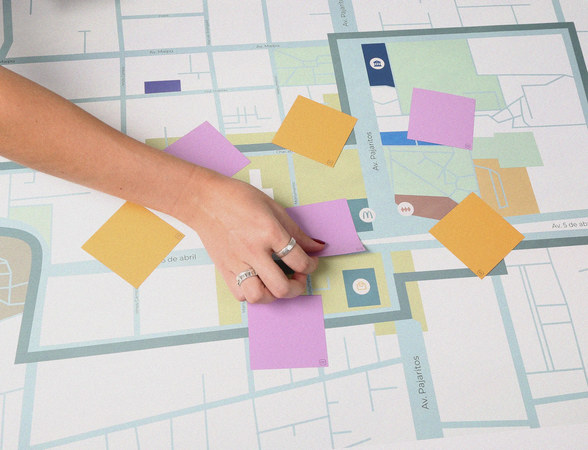
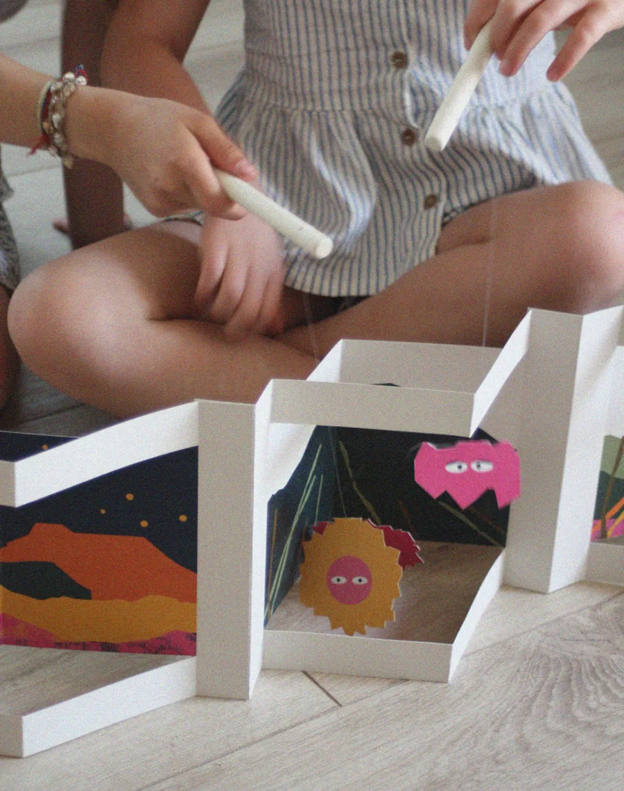
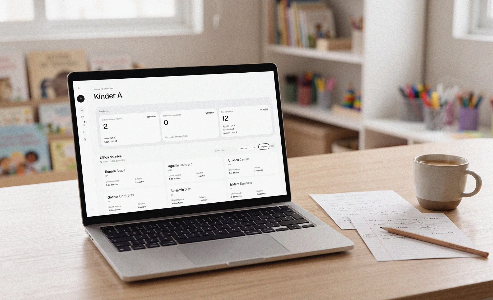
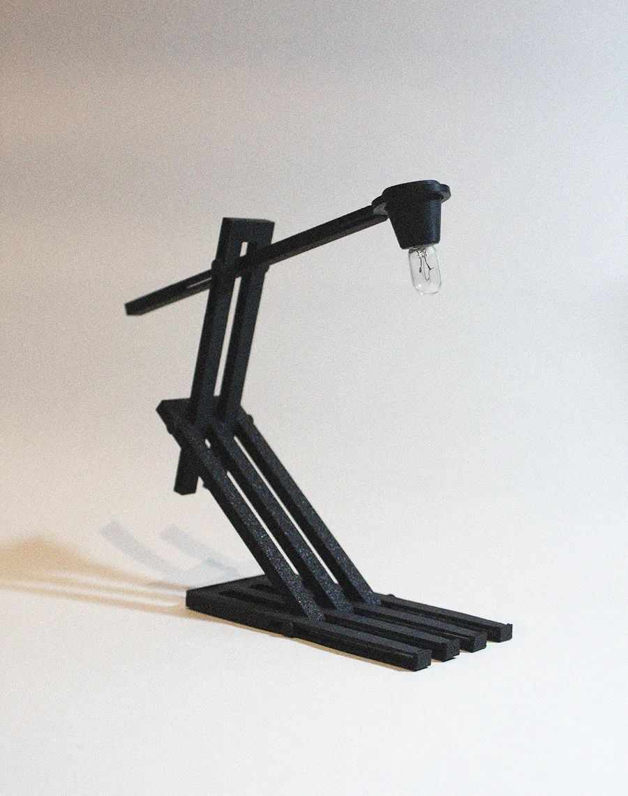
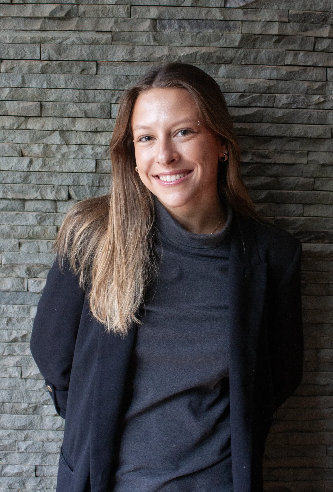

Rosa Astaburuaga
Integral Design
Pontificia Universidad Católica de Chile
Design research, services and systems
Santiago, Chile
Elisava Barcelona
Spring 2027





Index
Selected work from four years at Diseño UC, ordered by relevance. Each project shows the challenge, the research behind it, the decisions taken and what I learned.
- 01SIREPThesis · Service and system design · 2026→
- 02dystopiaParticipatory design · 2025→
- 03VPEStrategic design · 2024→
- 04SwaPetStrategic design · 2024→
- 05Días NubladosEditorial product · 2024→
- 06Escribiendo MemoriaService design · 2023→
- 07SocoDesign for resilience · 2023→
- 08Craft & MakingFabrication, prototyping and print · 2022–25→
I am drawn to the earliest stage of a project, when people still need to be understood, the problem has to be framed and the opportunity found.

I studied Design at Pontificia Universidad Católica de Chile, an integral programme that spans service design, strategic design, editorial design and product development. In my thesis project, SIREP, I am designing a pedagogical documentation system together with early childhood educators, iterating through tests with real users.
I do my best work in diverse teams and in settings where many stakeholders are involved. I am applying to Elisava because I want to add to my research background the business and innovation tools that allow a good idea to last, and to learn in an international setting before bringing that perspective back to Latin America.
- ( Education )
- Design, Pontificia Universidad Católica de Chile · Class of 2026
- ( Methods )
- Interviews, card sorting, usability testing, co-design, service blueprints, prototyping
- ( Tools )
- Figma, Adobe Illustrator and Photoshop, Fusion 360, 3D printing, laser cutting, Claude Code, generative AI tools
- ( Languages )
- Spanish (native) · English B2, Cambridge FCE
Beyond the classroom
- ( Internship · 2025, 2nd semester )Municipality of Independencia, DAEM
Design and innovation workshops for secondary school students, editorial design of the Municipal Orchestra's commemorative magazine and design of the concert experience.
- ( Internship · 2025, 1st semester )Puerto Arquitectura
Digital and print pieces for the marketing team of real estate projects.
- ( Facilitation · 2025 )LIP Public Innovation Hackathon
Facilitated multidisciplinary teams through the design process during a public innovation hackathon.
- ( Independent practice )Fine line tattoo artist
Freelance work with my own clients and Instagram account.
- ( Deepening electives, OPR )Selected courses
Generative AI as a Design Driver · Design Sketching · Inclusive Design · Computational Design · Digital Design and Manufacturing